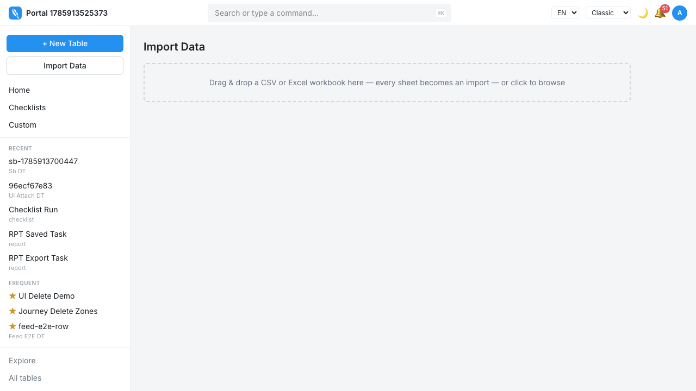
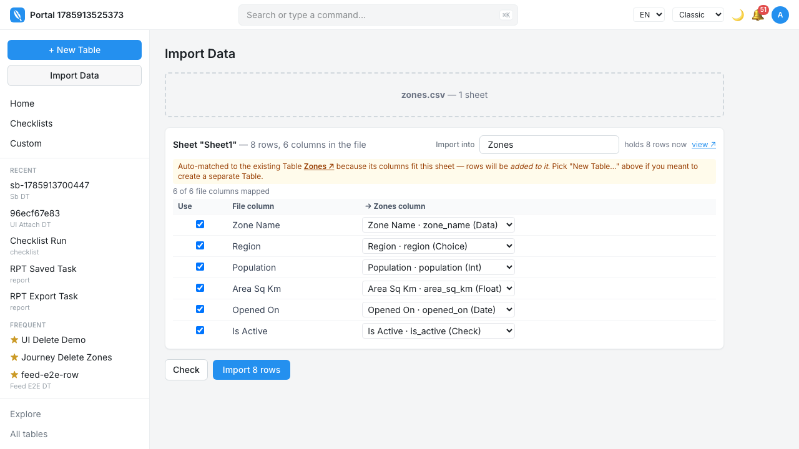
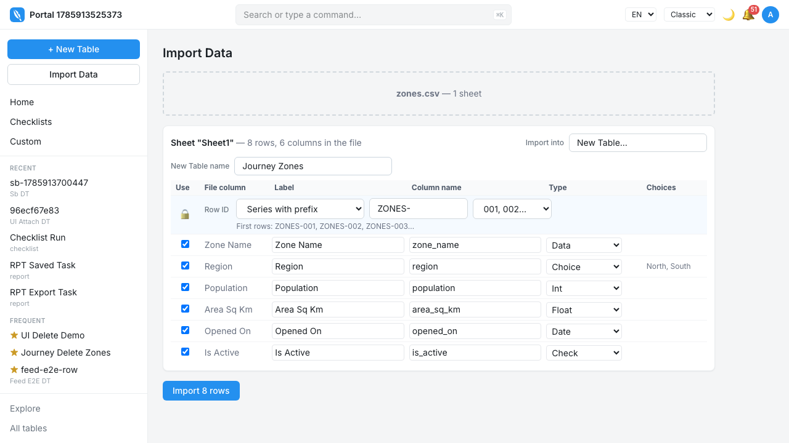
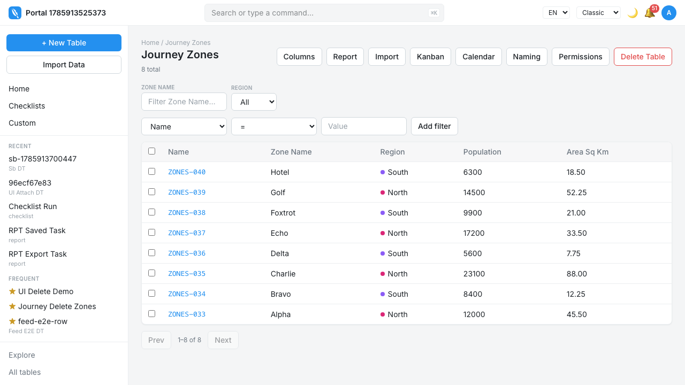

Spreadsheet Import (the wizard, end to end)
One page, three lenses. Read is the manual. Test turns the same page into the instrument for a session — tick a step, write down what you actually saw. Build shows the layer underneath: the rule each step cites, and what has and has not been proved.
Provenance. retrofit, 2026-09-04 — the wizard's behaviour recovered from what shipped. Two layers: the wizard core (built 2026-07/08, specified as Part II of docs/design/requirements-framework.md — the format's own worked example) and the redesign that merged as PR #210 (issue #197, tickets #198–#211: a file overview, merge groups, a stepper, resume, batches, column edits and Table merge). Upsert and revert are not re-specified here: they are spec 0004 and spec 0005, cited where the walk touches them.
IDs. IMP-J* journeys · IMP-R* rules · IMP-I* invariants · IMP-H* hazards · Q* questions
Evidence. a > evidence: verdict under each obligation below; linkage checked by tools/check-evidence.mjs
GroundBefore you start
- Bring the app up.
./init.shfrom the repo root — it starts Postgres if nothing is answering, then the API on:8000and the web app on:5173. - Sign in, then click Import Data in the sidebar. That screen is where every journey below starts.
- The files live beside this page, in
fixtures/ — one workbook per journey, listed below
with what each exists to provoke. Regenerate them with
pnpm manual:fixtures; never hand-edit them. - Resetting the app: a journey that has already run leaves Tables behind, and the wizard suggests an existing Table by column overlap — so delete the Tables a journey created before running it again. Past imports in the sidebar deletes the Tables one import created, in one act; the import history undoes the rows of one run.
- Resetting this page: your ticks, observations and matrix entries live in this browser only. Reset this session in the sidebar clears them; Copy session as Markdown (Test lens) takes them with you first.
GroundThe jobs
Seven jobs a person actually arrives with. Each is a journey below.
| Journey | The job, in the user's words | What the wizard owes them |
|---|---|---|
| IMP-J1 | "I have a spreadsheet and no table yet." | The file becomes a new Table, correctly typed, and fills it. |
| IMP-J2 | "The table exists and I have more rows." | The file's columns map onto an existing Table; the rows are added, or matched and updated. |
| IMP-J3 | "This workbook has seventeen sheets and I want four of them." | The file says what is in it before anything asks about columns, and the four are worked through one at a time. |
| IMP-J4 | "Eleven sheets, one per store, all the same shape." | They become one Table, and the columns only I could pair are paired by me. |
| IMP-J5 | "One sheet broke. Did the others go in?" | Yes, and the screen says exactly which did not. |
| IMP-J6 | "I went to look at the rows I just imported, and came back." | Everything is where it was left. |
| IMP-J7 | "That import made eleven Tables I did not want." | Every import is afterwards a thing you did — findable, readable, and undoable whole. |
GroundThe fixture — zones.csv, and what the later journeys add
The agreement instrument is unchanged: apps/web/e2e/fixtures/zones.csv, eight rows and six columns, each column landing on a different inferred type without a judgement call (Part II holds the table and its claims file). J1 and J2 ride it.
The redesign's journeys need shapes a single CSV cannot have, so each carries a small workbook of its own, described where it is used:
- J3 — a workbook of several unrelated sheets, at least one of them hidden in the workbook itself and one very hidden (a state only VBA can set).
- J4 — three sheets of the same shape, disagreeing only in spelling (
Merge Floor·MERGE FLOOR·merge_floor), one of them carrying a column the others lack; and a second pair naming the same real-world thing asStore Code(STR-009) andStore Name(Anna Nagar). - J5 — three sheets where the middle one is refused.
- J6 — a workbook of three sheets, imported one at a time.
- J7 — the residue of J3/J4: Tables an import created, Tables it only added to, and a column spelled
GlorwhereFloorwas meant.
Limits, stated on purpose: every one of these is deliberately benign — they are the agreement instruments. Hostile input (leading-zero codes, 16-digit identifiers, 70-character headers, files too large to hold) belongs to the rules' properties and boundaries, never to a fixture.
What is on disk
| File | Shape | Used by | What it exists to provoke |
|---|---|---|---|
| zones.csv | 8 rows · 6 columns | IMP-J1 IMP-J2 | The agreement instrument. Every column lands on a different inferred type with no judgement call: Choice (North/South), Int, Float, Date, Check. |
| zones-updates.csv | 6 rows against Zones | IMP-J2 | The matched-key half of J2, which spec 0004 owns: 3 updates, 2 inserts, one blank cell (Delta’s Population — keep or clear) and one key duplicated inside the file (Alpha twice). |
| zones-messy.csv | 7 rows, three of them bad | IMP-J1 IMP-J5 | J1.6’s bad-cell branch on both paths, and J5’s row numbering: a bad int, a bad date, a fully blank row (counted in the spreadsheet row numbers the user sees) and `maybe` in a yes/no column. |
| zones-large.csv | 1,200 rows | IMP-J2 IMP-J5 | A target sent in more than one part: chunked progress, one Import Log row per part, and a batch that still counts the target once (IMP-I5). Imported twice with a key, it also crosses the typed-confirmation threshold. |
| notes.pdf | one page, no rows at all | IMP-J1 | J1.2’s wrong-file-kind branch: refused by name — notes.pdf: not a CSV or Excel file — with the screen otherwise unchanged. |
| j3-mixed-sheets.xlsx | 5 sheets — 3 ordinary, 1 hidden, 1 very hidden | IMP-J3 | The whole of J3: unrelated sheets so nothing tempts a merge, a hidden sheet and a very hidden one (the state only a macro can set) for the overview’s own section, and three visible sheets so ticking two leaves one demonstrably out. |
| j4-store-floors.xlsx | 3 same-shape sheets, 45 cells of disagreement | IMP-J4 IMP-J7 | Every clause of the merge group. Merge Floor · MERGE FLOOR · merge_floor fold into one column (IMP-R16); Glor and Floor do not (IMP-H5) and are the pair the user combines; Glor is on one sheet only, so it is also the column the others lack; and Store Code (STR-009) / Store Name (Anna Nagar) are the pair no algorithm could propose — with Velachery carrying both, so a first/join rule is required (IMP-R17). Velachery’s middle row has a blank Store Name, which is what tells first apart from a rule that blanks the row. |
| j5-three-depots.xlsx | 3 ordinary sheets of one shape | IMP-J5 | J5’s partial failure. Tick all three as separate Tables and refuse Central Depot’s create call: the first result must survive, the second must be named with its reason, and the third must still import. |
| j6-three-weeks.xlsx | 3 sheets, imported one at a time | IMP-J6 | J6’s resume walk. Three separate targets give you a Table 2 of 3 to leave from and come back to, a first result to find still on screen, and a third still waiting. |
| j7-residue.xlsx | 3 sheets — two Tables created, one added to | IMP-J7 | The residue J7 acts on, in one drop. Floor Plan and Floor Plan Annexe create Tables (so the batch has Tables to delete) while Zone Register only adds rows to the Zones Table zones.csv already made (so the batch has a Table it must not delete). Floor Plan carries the misspelt Glor to rename, and Floor Plan Annexe is the second Table to merge into the first — with Glor and Floor staying apart until you pair them. |
The workbooks, sheet by sheet
So you know what “correct” looks like before you drop one.
| Workbook | Sheets |
|---|---|
| j3-mixed-sheets.xlsx | Zone Register 3 rows Zone · Region · Population Suppliers 2 rows Supplier · Contact · Since Vehicles 2 rows Registration · Kind · Capacity Kg Lookups 2 rows hidden Code · Meaning Macro Cache 1 rows very hidden key · value |
| j4-store-floors.xlsx | Anna Nagar 3 rows Store Code · Merge Floor · Floor · Items · Monthly Sales T Nagar 3 rows Store Name · MERGE FLOOR · Floor · Items · Monthly Sales Velachery 3 rows Store Code · Store Name · merge_floor · Glor · Items · Monthly Sales |
| j5-three-depots.xlsx | North Depot 2 rows Bay · Pallets · Checked On Central Depot 2 rows Bay · Pallets · Checked On South Depot 2 rows Bay · Pallets · Checked On |
| j6-three-weeks.xlsx | Week 1 3 rows Day · Orders · Revenue Week 2 2 rows Day · Orders · Revenue Week 3 2 rows Day · Orders · Revenue |
| j7-residue.xlsx | Floor Plan 3 rows Section · Glor · Items Floor Plan Annexe 2 rows Section · Floor · Items Zone Register 2 rows Zone Name · Region · Population · Area Sq Km · Opened On · Is Active |
Journey 1 · shape: sequenceFirst import: one file, one new Table witnessed
zones.csv end to end, and the seven manual slots IMP-J1.1–J1.7 are captured from it. Caveats, both inherited from Part II: J1.8 and J1.9 are witnessed at the contract tier (the form's controls are not yet label-associated), and the series-follows-the-final-name half of row identity is #114, so the walk asserts only the series shape.docs/specs/0008-spreadsheet-import.md:96
zones.csv




zones.csv, 8 added, 0 failed, created by this import
Branch at J1.2 — wrong file kind. Drop notes.pdf: refused by name — notes.pdf: not a CSV or Excel file — the screen otherwise unchanged.
Branch at J1.6 — a bad cell. Applies once a column's type is fixed (J2's existing column, or after the user set the type by hand): the cell fails its own row, the others import, and the failure is named by the row number the user sees in their spreadsheet (IMP-I1). On the untouched new-Table path the same cell instead widens the column's inferred type and nothing fails — a different, correct outcome.
Isolation strategy: self-cleaning through table deletion (spec 0003). The journey creates its Table under a journey-owned name and pre-cleans a leftover through the deletion capability rather than skipping, so it runs green on a used database. No skip path.
Journey 2 · deltas from J1The Table exists and I have more rows witnessed via


Branch at J2.5 — match on a column instead of always adding. Spec 0004 owns this whole branch and is not restated: the match key control and its remembered suggestion (UPS-R5), the counts shown before anything commits (UPS-R2), what an update touches (UPS-R3), the file's own codes as ids (UPS-R4), and the typed-back confirmation above CONFIRM_UPDATES_OVER updates (UPS-H1).
Isolation strategy: the target Table is created by the spec's own setup under a spec-owned name and appended to; row counts are asserted as before + N rather than absolutely, so the spec is honest on a database that has already run it. No skip path.
Journey 3 · shape: sequenceA workbook, sheets kept separate witnessed via
apps/web/e2e/import-overview.spec.ts and import-stepper.spec.ts, whose titles carry no ID — covered, not linked.docs/specs/0008-spreadsheet-import.md:166


Branch at J3.3 — continue with nothing ticked. Refused in place — Pick at least one sheet to import — and the file stays loaded.
Branch at J3.1 — a one-sheet file. There is nothing to choose, so the overview never appears; a CSV goes straight to its columns (this is J1).
Isolation strategy: every sheet name and target Table name is spec-owned and pre-cleaned through table deletion before the run, because the wizard suggests an existing Table by column overlap — a Table left by an earlier run would silently turn a new-Table grid into a mapping grid. No skip path.
Journey 4 · shape: sequenceEleven sheets of one shape become one Table unwitnessed
apps/web/e2e/import-merge.spec.ts (folding, one run per group, separate-still-works, the header-only lead) and apps/web/e2e/import-combine.spec.ts (nothing guessed, the user combines, undo, a sheet holding both), with the pure folding and projection rules under packages/shared/test/import.test.ts. No executable test title carries IMP-J4, so no linkage claim can be made; the titles were not renamed in this change.docs/specs/0008-spreadsheet-import.md:201


Store Code on one sheet, Store Name on another
Glor is folded into Floor, or any two unlike names are paired for you


Branch at J4.1 — fewer than two sheets ticked. Merging is offered but not choosable, and says why.
Branch at J4.9 — the first member sheet has a header row and no data. It is sent nowhere, and the import still records that it created the Table — otherwise the Table reads as pre-existing afterwards and J7's delete will not offer it.
Isolation strategy: as J3 — spec-owned sheet and Table names, pre-cleaned through table deletion, no skip path.
Journey 5 · shape: sequenceOne target fails; the rest still land unwitnessed
apps/web/e2e/import-partial-failure.spec.ts (the rest of the run continues, the committed result stays revertable, the history link is reachable before and after a failure) and, for the row numbering, by apps/web/e2e/import-row-numbers.spec.ts and apps/server/test/import/invariants.test.ts. No test title carries IMP-J5.docs/specs/0008-spreadsheet-import.md:235


Branch at J5.1 — the failure is a refusal you cannot pass. The wizard does not navigate away from a failure the user has not read.
Isolation strategy: the failure is induced at the network boundary (the second target's create call is refused) rather than by a fixture that is broken on purpose, so the first and third targets are genuinely ordinary. Tables are pre-cleaned by name. No skip path.
Journey 6 · shape: sequenceLeave the page, come back, carry on unwitnessed
apps/web/e2e/import-resume.spec.ts (look at the rows and come back, a full reload, a finished run is not resumed, start over, the rows do not fit but the decisions do) over the seam unit-tested in apps/web/test/import-session.test.ts. No test title carries IMP-J6.docs/specs/0008-spreadsheet-import.md:263


Branch at J6.6 — a different file is dropped. The saved plans address sheets by position, so they are applied only when the file's name, its sheet names, its column names and its row counts all match. Anything else starts fresh (see Q5 — it does so without saying so).
Isolation strategy: each test drops its own workbook under a test-owned file name and pre-cleans the Tables it will create; the saved session lives in the browser context Playwright discards between tests, so no cleanup code is needed and no run can inherit another's saved work.
Journey 7 · shape: sequenceAfterwards: what that import did, and putting it right unwitnessed
apps/web/e2e/import-batches.spec.ts, column-editor.spec.ts and table-merge.spec.ts, with the server behaviour in apps/server/test/import/batches.test.ts and apps/server/test/column-edit.test.ts and the two panels in apps/web/test/column-editor.test.tsx / table-merge.test.tsx. The per-run undo half is proven under RVT-J1 in spec 0005. No test title carries IMP-J7.docs/specs/0008-spreadsheet-import.md:292


Glor, open its Columns page and rename it to floor


Glor and Floor are not, and sample values from each are shown so you can pair them yourself

Branch at J7.9 — a column with nowhere to go. Named as left behind, with a way to add it to the target first and come back.
Branch at J7.10 — a source too large for one screenful. Refused with its row count rather than quietly merging the first page.
Isolation strategy: the batch tests assert over batches they created in the same run, addressed by their own identity rather than by "the most recent"; the column and merge specs create and delete their own Tables. No skip path.
UnderneathThe rules
Inherited, not restated
These are specified in Part II of docs/design/requirements-framework.md and in specs 0004 and 0005. They are cited in the journeys above and are not re-declared here; their verdicts live where they are declared.
| ID | What it owns |
|---|---|
| IMP-R1 · IMP-R2 · IMP-R3 · IMP-R4 | Column naming, type inference, Choice promotion, labels |
| IMP-R5 · IMP-R6 | Table naming, row identity and the id series |
| IMP-R7 | Target matching and the notice that it happened |
| IMP-R8 · IMP-R9 | Cell coercion, rehearsal |
| IMP-R10 · IMP-R11 | The import record, header-only files |
| IMP-R12 · IMP-R13 | Re-import as upsert, and undo — shipped as specs 0004 and 0005 |
| IMP-I1 · IMP-I2 · IMP-I3 | Reconciliation, chunked runs, rehearsal writes nothing |
| IMP-H1 · IMP-H2 · IMP-H3 | Wrong-table trap, abort without a record, whole-file predicates |
| UPS-R1–R5 · UPS-I1–I3 · UPS-H1 | Upsert — spec 0004 |
| RVT-R1–R6 · RVT-I1–I3 · RVT-H1 | Per-run revert — spec 0005 |
IMP-R14 — The file states what is in it shape: rule
apps/web/test/parse-file.test.ts (#198: visible / hidden / very hidden, a workbook with no sheet properties, visibility following the sheet across a skipped one) and the overview's rendering by apps/web/e2e/import-overview.spec.ts. No test title carries IMP-R14.docs/specs/0008-spreadsheet-import.md:391Property: for any workbook, every sheet that has a header row appears in the overview exactly once, carrying its own visibility — never the visibility of the sheet at its position after earlier sheets were skipped.
Per sheet the overview states: the sheet's name, its count of data rows (blank rows excluded, IMP-I1's definition), its column count, and the first SHAPE_HINT_COLUMNS named headers with a count of the rest. Nothing else — no column grids, no types, no mapping.
| The workbook says… | → | Why? |
|---|---|---|
| the sheet is ordinary | listed in the first section, expanded | the common case costs no clicks |
| the sheet is hidden | listed in its own section below, collapsed, labelled hidden | usually lookups and scratch calculations — but filtering them would hide real data in a sheet hidden for layout reasons |
| the sheet is very hidden | the same section, labelled distinctly | only a macro can set it, and only a macro can unset it; flattening it into ordinary hiding loses that |
| the file carries no sheet properties at all (a CSV, or a tool that omits them) | every sheet reads as ordinary | absence of the statement is not evidence of hiding |
| the sheet has no header row and no data | not listed | there is nothing to import and nothing to say about it |
IMP-R15 — Leaving a sheet alone is the only way to exclude it shape: rule
apps/web/e2e/import-overview.spec.ts, whose titles carry no ID — covered, not linked.docs/specs/0008-spreadsheet-import.md:416Property: a sheet that is not selected reaches nothing downstream — no card, no Table, no rows, no log entry — and selecting it again restores the target that was worked out for it when the file was read, not a blank one.
Nothing is selected when a workbook opens. The inverse default is what turned one seventeen-sheet import into eleven Tables nobody asked for (IMP-H4), so it is a rule, not a preference. There is no skip control to find: the tick is the whole vocabulary.
| The user… | → | Why? |
|---|---|---|
| opens a workbook | nothing ticked; the tally names the file and says so | selection is a statement, never an assumption |
| opens a single-sheet file (any CSV) | no overview at all — straight to columns | there is nothing to choose |
| ticks some sheets | the tally counts selected sheets, the rows they will import, the sheets left out, and the Tables that makes | the consequence is stated before it is committed to |
| continues with nothing ticked | refused in place, saying to pick at least one; the file stays loaded | an import of nothing is a mistake, not a request |
| unticks a sheet and ticks it again | its original target and column work come back | the wizard must not punish a changed mind |
IMP-R16 — Folding, and nothing beyond folding shape: rule
packages/shared/test/import.test.ts (mergeSheetHeaders / mergeSheetRows: case-space-underscore folding, no folded twin stays apart, a column only one sheet has, two headers folding together within one sheet, blank headers, the label from the first spelling, inference over the union) and walked in apps/web/e2e/import-merge.spec.ts. No test title carries IMP-R16.docs/specs/0008-spreadsheet-import.md:443Property: two headers become one column exactly when they are equal after case, spaces, underscores, hyphens and punctuation are removed — the same normalisation that matches a file's headers onto an existing Table's columns. Nothing else is inferred, ever (owner decision, 2026-08-26 — Q5 of issue #197).
| Two headers… | → | Why? |
|---|---|---|
Merge Floor and MERGE FLOOR and merge_floor | one column | exactly the class of difference a person cannot see on screen |
Glor and Floor | two columns | one letter apart, and guessing wrong silently merges unrelated data (H5). The user says it — R17 |
| both present in one sheet, folding together | two columns, kept apart | that sheet really has two, and folding them would drop one |
| blank, in two different sheets | two columns | a blank header is not evidence of anything |
| present in some members only | one column, kept; the members without it are named, and their rows leave it empty | a column dropped because not everyone has it is data loss by majority vote |
A group's column takes its label from the first spelling seen, normalised; type inference runs over every member's values at once, so two sheets disagreeing about whether a column is a number or text resolve once, before the Table is created.
IMP-R17 — A combine is an instruction, not an inference shape: rule
packages/shared/test/import.test.ts (combineOverlap, applyColumnCombines: position kept, rows follow, first is priority with fallback, join keeps both, a vanished key is ignored, two combines do not collide, inference sees the result) and walked in apps/web/e2e/import-combine.spec.ts. No test title carries IMP-R17.docs/specs/0008-spreadsheet-import.md:472Folding stops where the names stop looking alike, which leaves exactly one thing undone: a column set the user knows is one thing and no algorithm could. Store Code (STR-009) and Store Name (Anna Nagar) look nothing alike — which is why nothing proposes it, and why the user must be able to say it.
The panel therefore shows real sample values from each column: the reason to believe, or not. A combine names its columns, in the order given (that order is the priority), and the resulting column's name.
| A sheet carries… | → | Why? |
|---|---|---|
| only one of the combined columns | its value, whichever it has; no rule needed, and the panel says so | there is nothing to resolve |
| more than one of them | a rule is required, and the sheets that carry both are named | silently picking one is a data-loss bug |
more than one · rule first | the earliest column that actually has a value | priority with fallback: a blank in the winner must not blank a row the other could answer |
more than one · rule join | both, in priority order, separated by COMBINE_JOIN_SEPARATOR | keeping both is sometimes the honest answer |
The combined column sits where the first of its sources was — a combine must not reshuffle the grid the user is reading — is marked as combined by the user, and can be undone. A combine naming a column that has since gone (the selection changed underneath it) is ignored rather than fatal.
IMP-R18 — A merge group imports member by member shape: contract
apps/web/e2e/import-merge.spec.ts ("a merged run is logged per sheet under one run id, so reverting takes back all of them"; "a group whose first sheet is header-only still records that it created the Table") and apps/server/test/import/batches.test.ts ("a merge group is ONE target however many sheets fed it"). No test title carries IMP-R18.docs/specs/0008-spreadsheet-import.md:504A group is one target and many sheets. It is sent to POST /api/table/:table:import one part per member sheet, never as one blended batch. Behaviours:
- one run identity for the whole group, shared by every member's parts — so one undo takes the group back together (RVT-R1);
- one batch identity for the whole file-import (R22);
- each part records its own sheet's name, so provenance survives;
- a failed row is reported against the sheet it came from, by that sheet's own row numbering — a row number is only true against its own sheet (IMP-I1);
- the flag saying this import created the Table is stamped on the first part actually sent, not on the first member: a member whose rows are all blank is sent nowhere, and keying the flag to it would make the Table read as pre-existing afterwards.
IMP-R19 — One target on screen at a time shape: sequence
apps/web/e2e/import-wizard.spec.ts (IMP-010); the marked strip, per-target import, and "the bulk button finishes the rest without re-importing what landed" are apps/web/e2e/import-stepper.spec.ts, whose titles carry no ID.docs/specs/0008-spreadsheet-import.md:529Eleven cards stacked on one screen is the wall this redesign began from, and it also left nowhere to come back to after looking at imported rows. Behaviours:
- the column step shows exactly one target, and says where it sits — Table 2 of 11 — with Previous and Next;
- a strip lists every target, marks each done or failed, and jumps to any of them;
- import happens per target: a button naming that target's rows commits just that one and walks on to the first target still waiting;
- the bulk button reads Import the remaining N Tables and skips whatever already landed — re-importing a landed target would duplicate its rows, and the result on screen is the user's evidence that it landed;
- results render below the card, not inside it: with one card on screen, the card is the wrong place to keep a result;
- a rehearsal is scoped to the target on screen — rehearsing targets the user cannot see puts the report somewhere they are not looking.
IMP-R20 — A target fails alone, and a run that stops reports shape: contract
apps/web/e2e/import-partial-failure.spec.ts ("a failing target does not abandon the rest of the run"; "the committed result stays revertable after a later failure"; "the Import Log is reachable before a run, and after one fails"). No test title carries IMP-R20.docs/specs/0008-spreadsheet-import.md:556The defect this closes: the loop sat inside one attempt, so a throw on target 2 left targets 3..n unattempted and unreported, skipped the completion block, and took with it the only link to the import history — the one situation where the history matters most was the one that hid it.
- each target is attempted on its own; a failure is recorded against that target, named with its reason, and the run continues;
- the run reports whenever it stops — what imported, which targets failed by name, and how many are still to go — not only when everything succeeded;
- complete never latches on a partial run or on a per-target run;
- the wizard never navigates away from a failure the user has not read;
- the link to the import history is present from the moment the page opens, and after.
IMP-R21 — The wizard's work outlives the page shape: contract
apps/web/test/import-session.test.ts (round trip, a foreign entry treated as absent, rows never served for a different file, a storage failure losing the rows and not the decisions, sameShape's five refusals) and walked in apps/web/e2e/import-resume.spec.ts. No test title carries IMP-R21.docs/specs/0008-spreadsheet-import.md:579Two things are kept, deliberately apart:
- the decisions — the selection, every Table name, mapping, combine, the step you are on, and the results already committed. Small, changed on every keystroke, written often and cheaply, and flushed the moment the page is left rather than waiting on a timer that is about to be thrown away.
- the file's rows — large, written once. These are the half allowed to fail: a seventeen-sheet workbook does not fit, and the right answer is then to keep every decision and ask for the file again.
| Situation | → | Why? |
|---|---|---|
| the rows do not fit | said before the user leaves; the decisions are kept | discovering it on return is the surprise, not the dropping |
| the user returns with decisions but no rows | the plan is described — how many Tables, how many already imported — and the same file is asked for | losing eleven Tables' worth of naming because the data was too big is the bug |
| the file is dropped again | applied only when its name, sheet names, column names and row counts all match | plans address sheets by position; applying them to another workbook points mappings at the wrong columns |
| the run finished | nothing is resumed; the session is cleared | coming back is how you start the next import, and it is where the run history lives |
| Start over | the file and every choice about it are dropped, and a save already queued cannot put them back | an undo that gets undone is not an undo |
IMP-R22 — One file-import is one batch shape: contract
apps/server/test/import/batches.test.ts (#206/#207) prove the rollup, the merge group as one target, a chunked target counted once, appended-to Tables not counted as created, addressability, the 404, deletion, refusals by name, idempotent re-deletion, System Manager, the Import Log read grant and own-rows scoping; the page is walked in apps/web/e2e/import-batches.spec.ts. No test title carries IMP-R22.docs/specs/0008-spreadsheet-import.md:607GET /api/import/batches · GET /api/import/batches/:id · POST /api/import/batches/:id/delete_tables — the addresses are the contract's identity. The Import Log has always held the facts, a row per part per target; this is the thing the user actually did.
- every part of every target of one file-import carries the same batch identity, minted once when the file is read and surviving a resume;
- a batch rolls up per target, not per part: a chunked target is one line with its rows summed, and a merge group fed by eleven sheets is one line naming the sheets;
- each target says whether the import created the Table or only added rows to one that existed, and whether the Table is still there;
- batches are chosen first and their parts fetched second, so a page limit can never cut one import in half and report it as smaller than it was;
- reading answers to the Import Log's own read grant; an own-rows grant scopes to the parts that reader ran, so a shared batch does not carry someone else's parts along with it;
- deleting requires System Manager and removes only Tables the import created — a Table that merely received rows had data before and will after, and taking those rows back is the per-run revert (RVT-J1);
- each Table goes through the ordinary deletion path, so a Table another Table points at refuses in the usual way: named with its reason, while the rest still go;
- deleting an import's Tables sweeps the log rows that pointed at them, so the batch itself disappears from the next reading — which is why the outcome is reported by the page rather than by the card that is about to vanish.
IMP-R23 — Columns change after the rows are in shape: contract
apps/server/test/column-edit.test.ts (#209: values move with the name, the Table still names its own column, refusals for a taken name, a standard column, a non-snake_case name, a missing column, a non-System-Manager; a unique column keeps its constraint; a Sub-table's children survive and a later save does not drop them; adding a column and changing a label) and by apps/web/test/column-editor.test.tsx / apps/web/e2e/column-editor.spec.ts. No test title carries IMP-R23.docs/specs/0008-spreadsheet-import.md:645POST /api/table_def/:name/rename_column { from, to } — its own address, because PUT /api/table_def/:name matches columns by name: a changed name there reads as delete-plus-add, orphaning the physical column with its data while the new one arrives empty. Silent data loss.
Three operations, separated because they carry different risk:
- add a column — empty on every existing row, nothing to lose;
- relabel — the display name only, the data never moves;
- rename — the machine name, through the route above.
A rename carries with it everything that names the column: the unique constraint's own name, the Table's title column, an id pattern that names that column, and a Sub-table's children (which name their column on every row — left stale, the parent loads an empty list and the next save deletes the children it could not see).
Refused, each saying which: a standard column, a system Table, a Table bound to a data source, a name that is not lower snake_case, a name already taken, a column that is not there. Renaming to the same name is a no-op, not an error.
Type changes and column deletion are not offered. The server refuses a type change outright, and dropping a column is destructive in a way that belongs with Table deletion (0003) rather than beside a rename.
IMP-R24 — A post-hoc merge is an import shape: contract
apps/web/test/table-merge.test.tsx (folding pairs and refuses to guess, samples shown, the user pairs Glor with Floor, the source is copied not emptied, a column left behind, nothing merges until a target and a column are chosen, changing the target discards the old pairing, a source larger than one page merges all of its rows) and walked in apps/web/e2e/table-merge.spec.ts. No test title carries IMP-R24.docs/specs/0008-spreadsheet-import.md:683Merging one Table into another is an import whose source happens to be a Table rather than a file, so it is sent through the same import path. That is not a shortcut: it is what gives the merge chunking, per-row failure reporting, an import-history entry, a batch, and a run that can be reverted — and merging two thousand rows into the wrong Table is exactly when undo matters.
- pairing is folding and folding only (R16's rule, same normalisation);
GlorandFloorstay apart until the user says otherwise, and sample values from each column are shown so the question is answerable from the data; - an unpaired source column is left behind and named as such, with a way to add it to the target first;
- values are coerced to the target's types, so a text column landing in a number column becomes a number or fails saying so;
- the history entry names the source in the language of provenance — Merged from <source> — rather than a file that does not exist;
- the source Table is copied, never emptied, and the screen says so;
- a source larger than the screen's own ceiling is refused with its row count, never silently truncated; below that, every row is read, not the first page.
UnderneathInvariants
IMP-I4 — a merge group reconciles across its members.
apps/web/e2e/import-merge.spec.ts and apps/server/test/import/batches.test.ts; the per-sheet naming of a failed row is the wizard's own display and is exercised through IMP-I1's row-number tests, not against a group. No test title carries IMP-I4.docs/specs/0008-spreadsheet-import.md:720For a group: the sum of every member's data rows equals added + updated + failed + skipped-for-emptiness, and every failure is named by its own sheet and that sheet's own row number. Extends IMP-I1 from one sheet to many.
IMP-I5 — the batch rollup is arithmetic, not a summary.
apps/server/test/import/batches.test.ts ("the targets of one import roll up under it", "a merge group is ONE target however many sheets fed it", "a chunked target counts once, with its rows summed", "adding rows to a Table that already existed is not a creation"). No test title carries IMP-I5.docs/specs/0008-spreadsheet-import.md:733A batch's counts equal the sum over its targets, which equal the sum over their parts. A chunked target is counted once; a merge group is one target; the count of Tables the import created counts only those that still exist.
IMP-I6 — leaving the page does not fork the import.
apps/web/e2e/import-resume.spec.ts; the batch identity's survival across a resume is carried by the saved decisions and is unasserted end to end. No test title carries IMP-I6.docs/specs/0008-spreadsheet-import.md:745However many times the wizard is left and returned to, one file-import stays one batch, and a target that has landed is never sent a second time — by the bulk button, by a resumed session, or by both.
UnderneathHazards
IMP-H4 — one import, eleven Tables nobody asked for.
apps/server/test/import/batches.test.ts under R22, but no test title carries IMP-H4, so the hazard's closure is unlinked.docs/specs/0008-spreadsheet-import.md:761The reported incident: a seventeen-sheet workbook where the wizard included every sheet by default. Mitigations, all shipped: nothing is selected when a workbook opens (R15); the overview states how many Tables the current selection makes, before continuing (R15); a sheet left alone reaches nothing (R15); and when it happens anyway, the import is one findable thing whose created Tables go together in one act (R22).
IMP-H5 — a silent merge of unrelated data.
packages/shared/test/import.test.ts, apps/web/e2e/import-combine.spec.ts and apps/web/test/table-merge.test.tsx, but no test title carries IMP-H5.docs/specs/0008-spreadsheet-import.md:776Glor is one letter from Floor; guessing that wrong blends two different things and nobody sees it. Mitigations: folding and nothing beyond it, everywhere pairing happens — the merge group (R16) and the Table-to-Table merge (R24); sample values shown wherever the user is asked to pair (R17, R24); a sheet carrying both columns cannot be resolved silently and requires a rule, with first falling back rather than blanking (R17); combines are undoable (R17); and the whole thing is an import, so it reverts (RVT-J1).
IMP-H6 — the work that dies with the route.
apps/web/e2e/import-resume.spec.ts over the seam unit-tested in apps/web/test/import-session.test.ts, but no test title carries IMP-H6.docs/specs/0008-spreadsheet-import.md:792The owner's session: "I imported one of the sheets and then there was an error in the second sheet. I clicked on see the rows imported and went, and when I came back nothing was visible." Eleven Tables' worth of naming, mapping and committed results lived only on the screen. Mitigations: decisions and rows kept apart, the rows the only half allowed to fail (R21); the failure announced before leaving rather than discovered on return (R21); a re-drop checked against the file it was saved for (R21); and a landed target never sent twice (I6).
UnderneathOpen questions
Arbiter: arbiter: owner. None of these is a defect yet; each is a thing nobody has ruled on.
| # | Question | Blocked on |
|---|---|---|
| Q1 | Two documents now own the IMP-* family. Part II of docs/design/requirements-framework.md declares IMP-J*/IMP-R*/IMP-I*/IMP-H* as the format's worked example; this spec declares the same family for the journeys and for rules from R14. Should Part II be reduced to its format commentary (pointing here for the requirements), or should this spec be renumbered into a family of its own? Until it is ruled, IMP-J1/J2/J3 are declared in both documents, and this one is the newer statement. | owner's ruling |
| Q2 | Retargeting a merge group to an existing Table. The mapping is worked out against the lead sheet's raw headers while the grid on screen shows the group's folded columns, so the two can disagree in both count and order. Is this a defect to file, or a state the UI should refuse to enter (a group is a new Table, full stop)? | owner's ruling |
| Q3 | Going back to the overview after a target has landed. Continuing from the overview clears the results already committed for the sheets it re-plans, after which Import the remaining N Tables would send a target that already landed — duplicating its rows. Defect, or should returning to the overview be refused once anything has been imported? | owner's ruling |
| Q4 | A resumed import may write a cell differently. Dates survive the saved rows as text, so a date cell landing in a text column is stored in a different format after a resume than it would be without one. Ratify (the difference is cosmetic in a text column) or file? | owner's ruling |
| Q5 | A re-drop that does not match is discarded in silence. Dropping a different file after leaving the page starts fresh without saying that saved work was thrown away — the opposite of R21's "announced, not discovered". Ratify or file? | owner's ruling |
| Q6 | The threshold register has drifted. ADR 0008 still places IMPORT_CHUNK in the wizard (it now lives with the import-run module), and the redesign added named constants it does not list: SHAPE_HINT_COLUMNS, PREVIEW_ROWS, CONFIRM_UPDATES_OVER, COMBINE_JOIN_SEPARATOR, and the Table-merge screen's own sample, page and row ceilings — one of which is called MAX_ROWS, like the server's unrelated per-request cap. Register them, or leave them local? | owner's ruling |
| Q7 | Table-to-Table merge has no rehearsal and no confirmation. It writes up to its ceiling in one click, while the wizard demands the number be typed back above CONFIRM_UPDATES_OVER updates (UPS-H1). It is revertable, which may be enough. Extend the guard, or ratify the asymmetry? | owner's ruling |
| Q8 | **Hidden sheets and Select all.** The master tick selects hidden and very-hidden sheets along with the visible ones. Deliberate (they are shown, so they are selectable) or should the master act on the visible section only? | owner's ruling |
UnderneathClosure sweep
- actors & permissions: R22 — the import history is a reading of the Import Log and answers to the Import Log's own read grant, own-rows scoping included; deleting an import's Tables additionally requires System Manager. R23 — column changes require System Manager. The wizard's row writes inherit IMP-R10's whole-request refusal and UPS-R1/RVT-R6's extensions.
- prior state & lifecycle: the redesign is *residue*-shaped at both ends — J7 acts on what J3/J4 left behind, and reversal is 0005 per run plus R22's per-batch Table deletion, which deliberately covers only Tables the import created.
- concurrency & retries: R19/R21 — a target that has landed carries its result and is never sent twice, by the bulk button or by a resumed session (I6). Two people importing the same file get two batches; there is no shared draft.
- external-dependency failure: (none — local end to end. The browser's own storage is the one dependency that may refuse, and R21 makes that a first-class, announced outcome rather than an error.)
- durability & recovery: R21 — decisions and rows are held apart on purpose, and the rows are the half allowed to fail; R20 — a run that stops reports what it did and what is left, so it can be finished rather than restarted.
- security & privacy: covered by the permission rules; the import history exposes file names, sheet names and target Tables, which is why R22 gates it on the log's own grant rather than on holding a session.
- accessibility: every control the journeys touch is a real labelled control — the sheet ticks are labels wrapping their checkboxes, the combine ticks carry an accessible name naming their column, the merge target selects name their source column, and the typed confirmation's input states what typing the number will do.
- performance & scale: rows are sent in fixed-size parts (
IMPORT_CHUNK, ADR 0008) and the log holds one row per part; the overview and the stepper render one screen at a time regardless of sheet count; a Table-to-Table merge refuses above its own ceiling rather than truncating (R24). The batch history picks batches first and their parts second, so a page limit can never cut one import in half. - observability: every part of every target records its file, sheet, part number, run and batch; R22 rolls those into the thing the user did.
- compound hazards: IMP-H4, IMP-H5, IMP-H6 (and the inherited IMP-H1–H3).
Two deliberate departures from the template
TWO DELIBERATE DEPARTURES FROM THE TEMPLATE, both owner-directed
experiments made ahead of formal ratification. Flagged here so a reviewer
judges them as choices, not as drift.
1. A FOURTH FIELD in every journey step — "Bug if". The template's triple
says what must be true; this says what going wrong at THIS step looks
like, in one clause. It is the failure the step exists to catch, and it
is what a reader reaches for when the step passes and something still
feels wrong. Terse by rule: one clause, no rule IDs.
2. THE LANGUAGE SPLIT. Journey steps are written in the USER's language —
what a person sees and does, press-release voice. No implementation
nouns appear in a journey: no storage keys, no chunks, no scores, no
routes. Every one of those lives in the RULES layer, where named
constants and addresses belong (thresholds cite ADR 0008). The test of
a journey step is whether its "must observably see" could be read off
the screen by someone who has never seen the code.
3. INHERITANCE, NOT RESTATEMENT. IMP-R1–R13, IMP-I1–I3 and IMP-H1–H3
were specified in Part II of the requirements framework and are cited
here, never re-declared — restating them in a second accountable
document is how two specs come to disagree. This document's own rules
start at IMP-R14, its invariants at IMP-I4, its hazards at IMP-H4.
Whether Part II should now be reduced to its format commentary is Q1.
AfterwardsTry to break it
Unscripted. The journeys above are the paths somebody already thought about; these are the ones the spec is worried about. There is no tick box — go off the path, and write down anything that surprises you.
IMP-H4Try to make it happen: one import, eleven Tables nobody asked for.
The spec says this must not be possible. Go and find out.
The reported incident: a seventeen-sheet workbook where the wizard included every sheet by default. Mitigations, all shipped: nothing is selected when a workbook opens (R15); the overview states how many Tables the current selection makes, before continuing (R15); a sheet left alone reaches nothing (R15); and when it happens anyway, the import is one findable thing whose created Tables go together in one act (R22).
apps/server/test/import/batches.test.ts under R22, but no test title carries IMP-H4, so the hazard's closure is unlinked.docs/specs/0008-spreadsheet-import.md:761IMP-H5Try to make it happen: a silent merge of unrelated data.
The spec says this must not be possible. Go and find out.
Glor is one letter from Floor; guessing that wrong blends two different things and nobody sees it. Mitigations: folding and nothing beyond it, everywhere pairing happens — the merge group (R16) and the Table-to-Table merge (R24); sample values shown wherever the user is asked to pair (R17, R24); a sheet carrying both columns cannot be resolved silently and requires a rule, with first falling back rather than blanking (R17); combines are undoable (R17); and the whole thing is an import, so it reverts (RVT-J1).
packages/shared/test/import.test.ts, apps/web/e2e/import-combine.spec.ts and apps/web/test/table-merge.test.tsx, but no test title carries IMP-H5.docs/specs/0008-spreadsheet-import.md:776IMP-H6Try to make it happen: the work that dies with the route.
The spec says this must not be possible. Go and find out.
The owner's session: "I imported one of the sheets and then there was an error in the second sheet. I clicked on see the rows imported and went, and when I came back nothing was visible." Eleven Tables' worth of naming, mapping and committed results lived only on the screen. Mitigations: decisions and rows kept apart, the rows the only half allowed to fail (R21); the failure announced before leaving rather than discovered on return (R21); a re-drop checked against the file it was saved for (R21); and a landed target never sent twice (I6).
apps/web/e2e/import-resume.spec.ts over the seam unit-tested in apps/web/test/import-session.test.ts, but no test title carries IMP-H6.docs/specs/0008-spreadsheet-import.md:792Q1Unsettled — try to reach it
Nobody has ruled on this yet. Produce the situation and say what you think.
IMP-* family. Part II of docs/design/requirements-framework.md declares IMP-J*/IMP-R*/IMP-I*/IMP-H* as the format's worked example; this spec declares the same family for the journeys and for rules from R14. Should Part II be reduced to its format commentary (pointing here for the requirements), or should this spec be renumbered into a family of its own? Until it is ruled, IMP-J1/J2/J3 are declared in both documents, and this one is the newer statement.blocked on: owner's ruling
Q2Unsettled — try to reach it
Nobody has ruled on this yet. Produce the situation and say what you think.
blocked on: owner's ruling
Q3Unsettled — try to reach it
Nobody has ruled on this yet. Produce the situation and say what you think.
blocked on: owner's ruling
Q4Unsettled — try to reach it
Nobody has ruled on this yet. Produce the situation and say what you think.
blocked on: owner's ruling
Q5Unsettled — try to reach it
Nobody has ruled on this yet. Produce the situation and say what you think.
blocked on: owner's ruling
Q6Unsettled — try to reach it
Nobody has ruled on this yet. Produce the situation and say what you think.
IMPORT_CHUNK in the wizard (it now lives with the import-run module), and the redesign added named constants it does not list: SHAPE_HINT_COLUMNS, PREVIEW_ROWS, CONFIRM_UPDATES_OVER, COMBINE_JOIN_SEPARATOR, and the Table-merge screen's own sample, page and row ceilings — one of which is called MAX_ROWS, like the server's unrelated per-request cap. Register them, or leave them local?blocked on: owner's ruling
Q7Unsettled — try to reach it
Nobody has ruled on this yet. Produce the situation and say what you think.
CONFIRM_UPDATES_OVER updates (UPS-H1). It is revertable, which may be enough. Extend the guard, or ratify the asymmetry?blocked on: owner's ruling
Q8Unsettled — try to reach it
Nobody has ruled on this yet. Produce the situation and say what you think.
blocked on: owner's ruling
RecordThe tracking matrix
Steps and observations roll up here on their own — you only supply the verdict. Confused is a first-class outcome; for this feature it is the more valuable one. The spec says column is the spec's own evidence verdict, so you can see at a glance whether you are re-checking something already proven or witnessing something for the first time.
| Journey | Steps | Spec says | Result | Notes |
|---|---|---|---|---|
| IMP-J1 First import: one file, one new Table |
witnessed | |||
| IMP-J2 The Table exists and I have more rows |
witnessed via IMP-010, IMP-013, UPS-J1 | |||
| IMP-J3 A workbook, sheets kept separate |
witnessed via IMP-010, IMP-013 | |||
| IMP-J4 Eleven sheets of one shape become one Table |
unwitnessed | |||
| IMP-J5 One target fails; the rest still land |
unwitnessed | |||
| IMP-J6 Leave the page, come back, carry on |
unwitnessed | |||
| IMP-J7 Afterwards: what that import did, and putting it right |
unwitnessed |